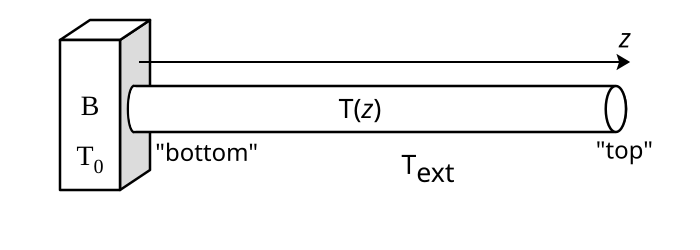
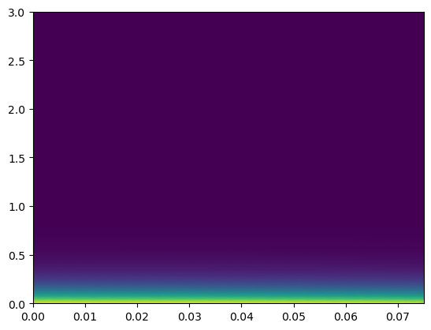
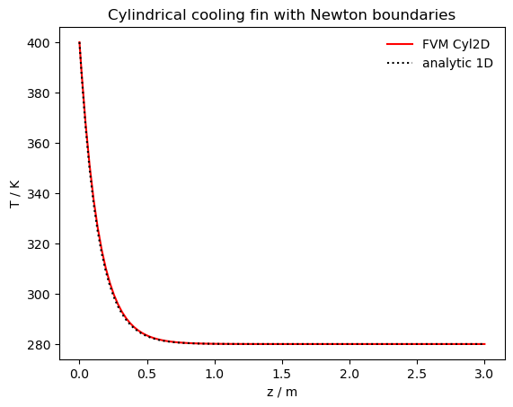

Cylindrical cooling fin with Newton cooling boundary condition¶
MW260614
Reference: http://olivier.granier.free.fr/MOOC-Anglais/Transferts/co/ex-CCP-6-transferts.html
Let’s consider a solid body B (for instance, a power transistor housing) with \(T_0\) its temperature, which is higher than \(T_\textrm{ext}\), temperature of the surrounding air.
In order to cool the body B, we put into place a cooling fin, made of a cylinder of \(L\) length and with \(S = \pi R^2\) its section. The cooling at the surface of the fin is modeled using Newton’s law of cooling.
We will study this fin in stationary mode.
This is a classic exercise in heat transfer. It is usually approached analytically with simplifying assumptions, giving a 1D problem and solution.
For the PyFVTool model, we use CylindricalGrid2D(r, z) to work with actual Newton BCs. (In PyFVTool Grid1D, the Newton cooling through the side wall would show up as a (linear) source term. Interesting for a future exercise.)

The labeling of ‘top’ and ‘bottom’ of the cylinder may appear confusing in this drawing, since it has been rotated 90° clockwise with respect to PyFVTool’s conventions. In PyFVTool 2D cylindrical, the ``bottom`` boundary corresponds to small z, and the ``top`` boundary to large z. In the radial direction, the ``left`` boundary is at small r (often, the center of the cylinder, so it should remain a “no flux” boundary). The ``right`` boundary is at large r, and represents the outer wall of the cylinder.
to-do¶
explore more fancy plotting
implement
Grid1Dmodel with linear source term modeling the Newton cooling of each volume elementstudy appearance of radial gradient as aspect ratio of the cylinder decreases
FVM model in 2D cylindrical geometry¶
[1]:
import numpy as np
import matplotlib.pyplot as plt
import pyfvtool as pf
We use a very thin rod and high aspect ratio because the 1D analytic approximation (used for comparison) is based on the assumption of a very high aspect ratio.
For a later modeling exercise, we can of course play with the aspect ratio to investigate how the 1D analytic solution starts deviating in cases of ever lower aspect ratios.
[2]:
Nr = 20
Nz = 100
Lr = 0.075
Lz = 3.0
k = 50.0 # [W m-1 K-1]
h = 100.0 # [W m-2 K-1]
rhocp = 3.3e6 #
alpha = k / rhocp
T_source = 400.0
T_ext = 280.0
rixsel = Nr//2 # index of r position whose z profile is analysed
# Take center of domain as representative 'radially averaged" temperature
# along the rod
Tdev_tol = 2.0 # acceptable deviation between FVM Cylindrical2D and analytic 1D model
[3]:
mesh = pf.CylindricalGrid2D(Nr, Nz, Lr, Lz)
[4]:
Tcell = pf.CellVariable(mesh, 0.0)
We consider that the hot body B keeps the “bottom” (see drawing!) of the cooling fin at a constant temperature.
[5]:
Tcell.BCs.bottom.fixedValue(T_source)
# Finally, the 'top' boundary condition setting should be irrelevant
# because the cylinder should long enough such that the extremity is
# already at T_ext. All BC types should give same result.
# Tcell.BCs.top.fixedValue(T_ext)
The Newton cooling boundary condition on the cylinder wall is set as follows.
[6]:
Tcell.BCs.right.newtonCooling(k, h, T_ext)
Now, we can solve the steady-state problem.
[7]:
pf.solvePDE(Tcell,
[-pf.diffusionTerm(pf.FaceVariable(mesh, alpha))]);
[8]:
rr, zz, Trrzz = Tcell.plotprofile()
# in the future, convert to xarray.DataArray for easier processing
[9]:
pf.visualizeCells(Tcell)
# in the future, come up with more fancy plotting

Compare with analytic 1D solution¶
The analytic solution of the 1D model can be written as follows.
\(T(z) = (T_0 - T_\textrm{ext}) e^{-z/D} + T_\textrm{ext}\)
with
\(D = \sqrt{\frac{kR}{2h}}\)
[10]:
D = np.sqrt((k*Lr)/(2*h))
Tan = (T_source-T_ext)*np.exp(-zz/D) + T_ext
[11]:
plt.plot(zz, Trrzz[rixsel, :], 'r-', label='FVM Cyl2D')
plt.plot(zz, Tan, 'k:', label='analytic 1D')
plt.ylabel('T / K')
plt.xlabel('z / m')
plt.legend(frameon=False)
plt.title('Cylindrical cooling fin with Newton boundaries');

[12]:
# Check notebook calculation integrity
Tdev = Tan - Trrzz[rixsel, :]
assert np.all(abs(Tdev) < Tdev_tol),\
"deviation beyond tolerance between Cylindrical2D FVM and analytical 1D models"
[ ]: